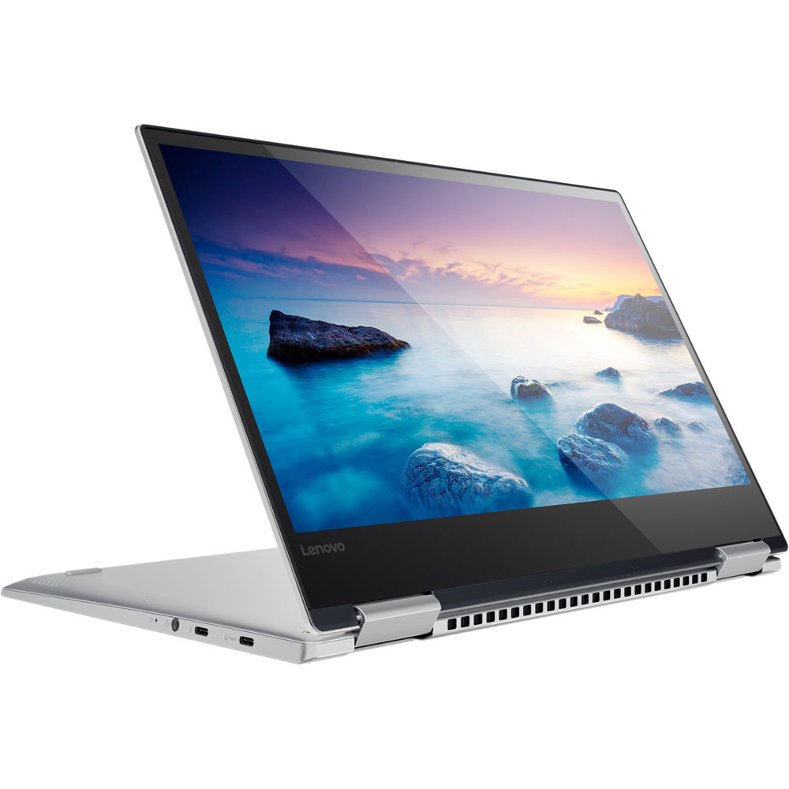
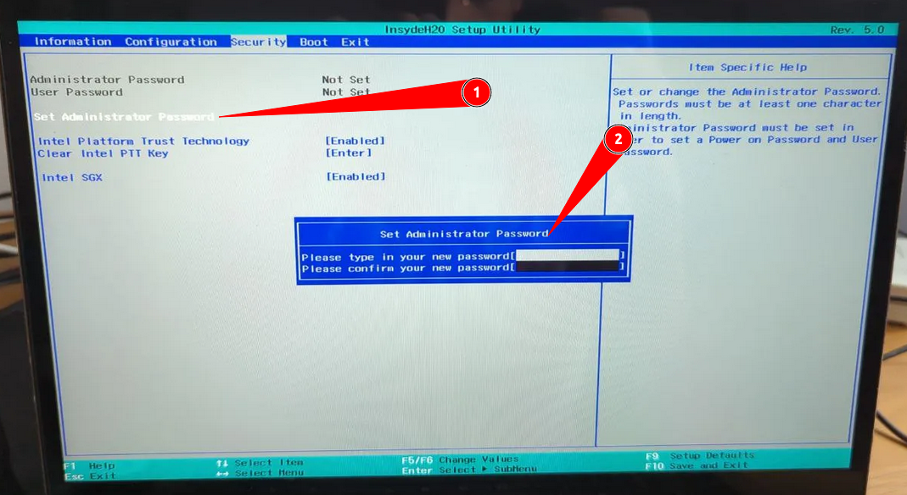
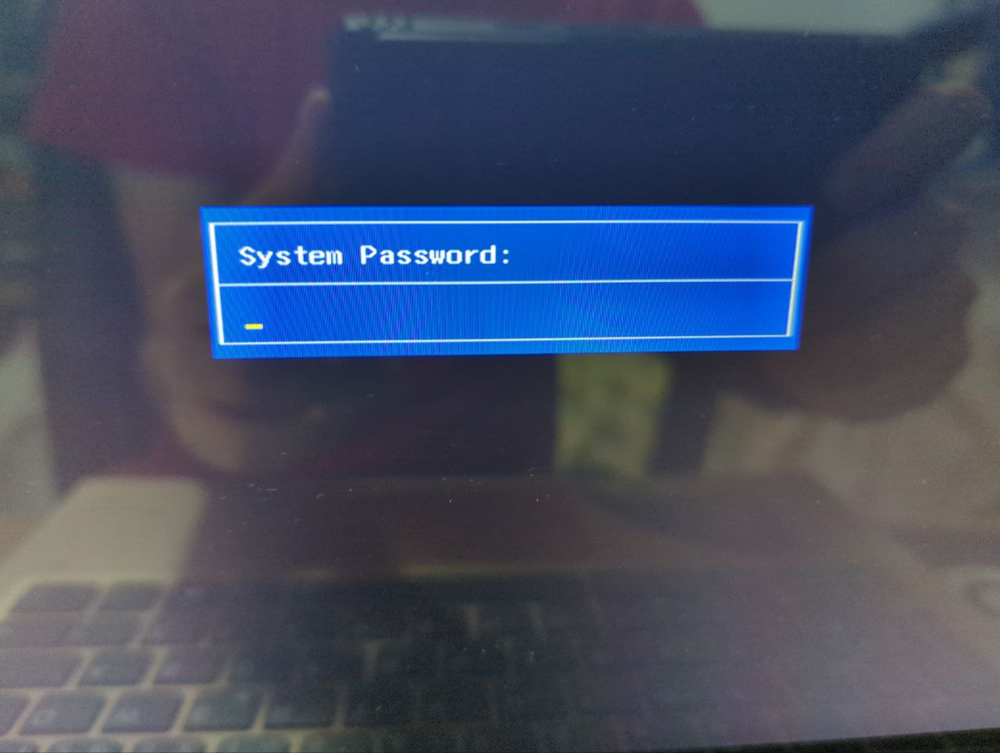
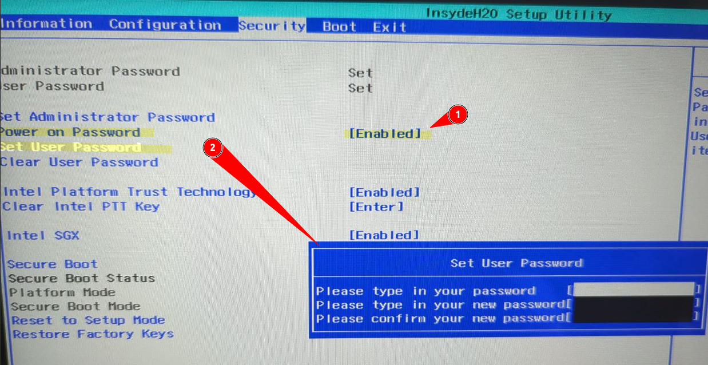
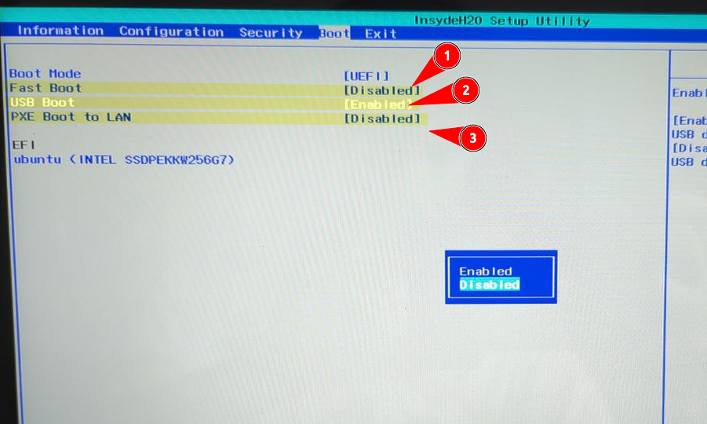
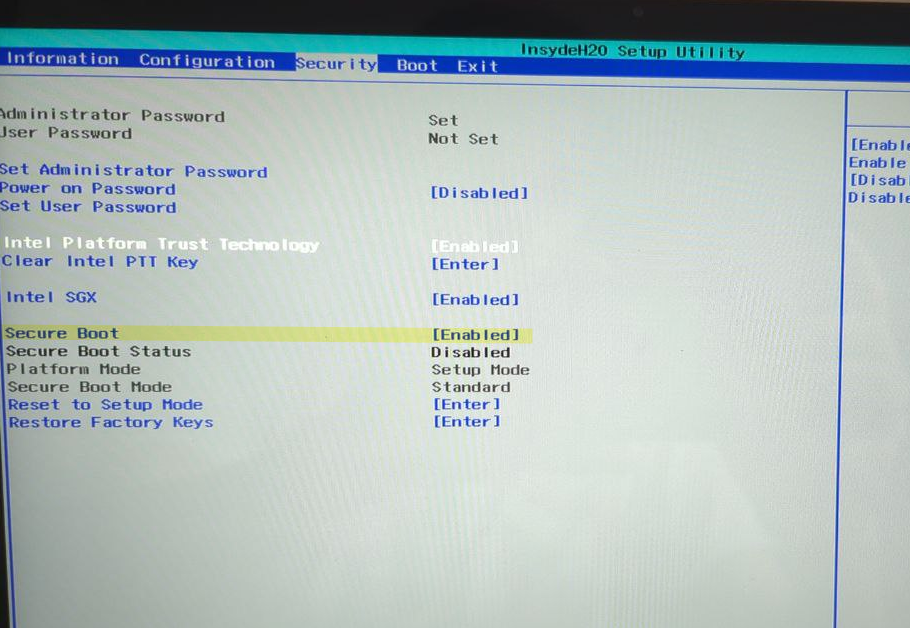
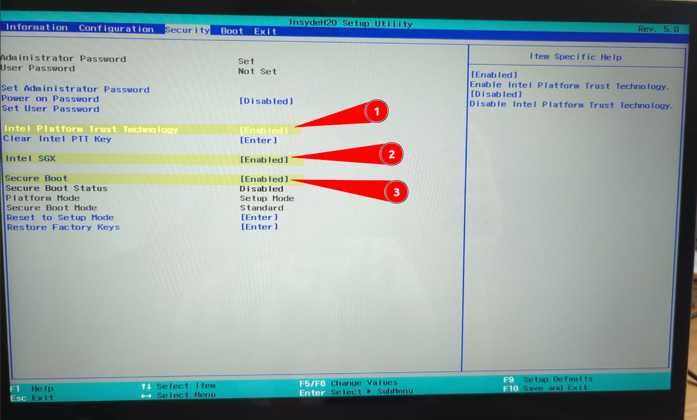

En este proyecto se explorarán opciones del sistema UEFI/BIOS para con el objetivo de dificultar el acceso no autorizado al sistema y protegerlo contra posibles ataques. Se elaborará una guía paso a paso de como podemos aplicar estos ajustes y así minimizar la superficie de ataque de nuesto equipo.
En esta practica he trabajado con la BIOS/UEFI de un portatil Lenovo yoga 720 con procesador intel de 7ª generación.

En la opción de Security<"Set administrative password" se puede añadir una contraseña para el acceso a la BIOS/UEFI.
Es importante anotar esta contraseña ya que la única manera de rrestaurarla es restaurando la configuración de fabrica de la placa base, lo cual requiere desmota el portátil y quitar la pila de la BIOS o hacer un puente un unos pines dedicados para ello.


Para quitarla, en la misma opción de "set administrative password" nos permite cambiarla. Nos pide la contraseña actual y la nueva contraseña. En nueva contraseña se deja el campo en blanco.
Se realiza el mismo proceso que el paso anterior, esta vez se selecciona Security<"Set user password" (2) y se habilita "Power on Password" (1)

Esto hará que nos pida la contraseña cada vez que arranquemos el equipo para hacer cualquier acción con el. Ver imagen del apartado anterior.
Para quitarla es el mismo procedimiento que el caso anterior.
Para este apartado se ha deshabilitado el arranque por PXE(3) (imágenes enviadas por un servidor) y por dispositivos USB para evitar que nadie pueda intentar arrancar software e inspeccionar o modificar el contenido de nuestros discos. En caso de que el dispositivo tuviese lector de disco también sería conveniente desactivar el arranque por este medio. Por ultimo he mantenido el fastboot (1) deshabilitado ya que es una característica para sistemas Windows.

Figura2 BIOS/UEFI de lenovo yoga 720 apartado boot
Por último sería recomendable eliminar los discos que no tienen sistema operativo del orden de arranque, si no fuese posible ponerlas de ultima opción. Esto reduce la posible superficie de ataque. En este equipo solo se pude ver un dispositivo que es el del único disco duro disponible.
En otros equipos se puede ver el orden de arranque de la siguiente forma:

El Secure Boot impide la ejecución en el arranque de software no firmado. Esto puede causar problemas con sistemas Linux, ya que el sistema de firmas lo gestionan principalmente Microsoft y los fabricantes. En mi investigación, encontré el siguiente dato interesante:
Las versiones modernas de Ubuntu, a partir de Ubuntu 12.04.2 LTS y 12.10, normalmente arrancan e instalan sin problemas en la mayoría de los PC con Secure Boot activado. Esto se debe a que el cargador de arranque EFI de primera etapa de Ubuntu está firmado por Microsoft.
En la BIOS/UEFI de esta máquina, la opción de Secure Boot se encuentra en la sección de Security > "Secure Boot". También es importante arrancar el sistema en modo UEFI.
Desde allí se puede habilitar:
-Intel PTT https://www.intel.la/content/www/xl/es/support/articles/000007452/intel-nuc.html
Intel Platform Trust Technology PTT es una solución de seguridad que proporciona funcionalidades similares a las del Trusted Platform Module (TPM) pero sin necesidad de un chip físico dedicado. PTT se integra en el firmware del sistema, permitiendo la gestión de credenciales y claves criptográficas de manera segura. Es especialmente útil para funciones como el cifrado de disco completo y la autenticación segura
Intel Software Guard Extensions (SGX) es una tecnología de seguridad que permite a los desarrolladores proteger datos y códigos sensibles mediante la creación de enclaves seguros en la memoria. Estos enclaves son áreas de memoria que están aisladas y protegidas, lo que impide que cualquier código fuerael enclave acceda a su contenido, incluso si el sistema operativo está comprometido
AMD ofrece una alternativa a SGX con su suite de seguridad llamada Infinity Guard, que incluye características como la protección de memoria y el cifrado de datos en reposo. Aunque no tiene una funcionalidad equivalente exacta a SGX, Infinity Guard se centra en la seguridad del hardware y proporciona capacidades robustas para proteger datos en entornos de virtualización

La configuración de la BIOS/UEFI es una primera línea de defensa en la seguridad de un sistema. Al implementar las medidas de seguridad descritas en este trabajo, se ha logrado endurecer significativamente el proceso de arranque del sistema.
Las contraseñas de acceso, la restricción de dispositivos de arranque y la desactivación de funcionalidades innecesarias dificultan el acceso no autorizado al sistema y reducen la superficie de ataque. La activación del arranque seguro proporciona una capa adicional de protección al verificar la integridad del sistema operativo.
Es importante destacar que la seguridad informática es un proceso continuo y que es importante mantenerse informado de vulnerabilidades descubiertas en nuestro sistema y aplicar mediadas para mitigarlas. Además de esto se debe de diseñar una defensa en profundidad y securizar el resto de componentes del sistema.
En la siguiente parte del proyecto se hablará de como implementar medidas de seguridad en el gestor de arranque GRUB2 para sistemas GNU/Linux.